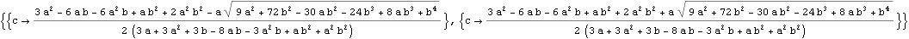

Les tireurs fous.
Graphe de Markov :
Résolution du graphe de Markov par la méthode matricielle (Q=() est la matrice de transitions entre états internes et S tient compte des états de bord) :
Seule la première ligne compte si on ne s’intéresse qu’aux probabilités d’absorption :
Représentation graphique. Trois possibilités seulement : pa>pb>pc, pa>pc>pb, pc>pa>pb. Dans l’espace 3D, {a,b,c}, les séparatrices sont solutions positives de :

Les séparatrices déterminent les volumes correspondants à pa>pb>pc, pa>pc>pb, pc>pa>pb, en progressant selon une verticale, de bas en haut :
Espace tétraédrique disponible, c<b<a :
Le volume correspondant au cas, pc>pa>pb est loin d’être négligeable ! Quelques exemples :